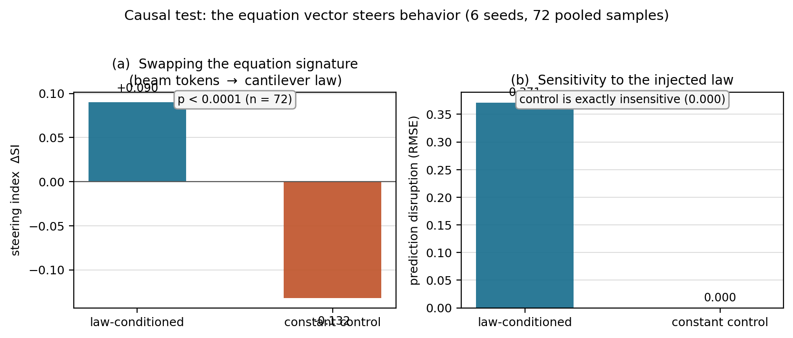
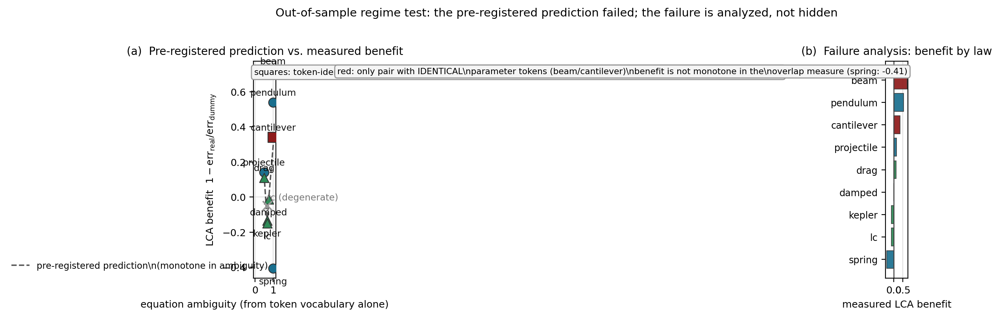
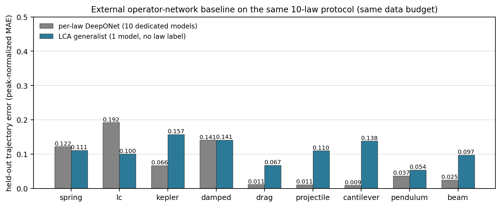

We present PhysFormer, a transformer adjusted for physics, and Law-Conditioned Attention (LCA), a new way to feed physics into it. The governing equation is tokenized into a fixed symbolic vocabulary, embedded into a law vector, and injected as a cross-attention key/value stream in every layer. Physics enters through two channels with different jobs: the loss channel (a physics-consistency layer) buys consistency, 6–8× residual reduction, without held-out accuracy; the input channel — the invention of this paper — is causally active at inference. Across 36 paired runs, LCA reduces trajectory error by 21% (p = 0.0003); swapping the equation signature steers the prediction (p < 0.0001) while a constant-signature control is exactly insensitive. We pre-registered a regime theory and falsified it on a ten-law suite (ρ = 0.07, p = 0.88), reporting the failure analysis. Ten dedicated per-law DeepONets reach median held-out error 0.037 vs. the single generalist's 0.110, which beats them outright on spring and LC.
The standard way to make a network physical is a loss term — and the standard way to stop measuring what it does. This paper separates the two effects a single number usually conflates: physics as a penalty (consistency) and physics as input (accuracy). Only the input channel moves held-out error, and it does so causally: remove the equation signature at inference and the prediction changes in a direction the data alone cannot explain.

Swapping the equation signature at inference steers the prediction; a constant-signature control is exactly insensitive. The equation is used, not decoratively present.

The pre-registered monotone regime theory failed (p = 0.88). The overlap measure conflates supersets with genuine indistinguishability — the failure analysis is the sharpest section.

Ten dedicated per-law DeepONets beat the single generalist on per-law fidelity, but with no cross-law structure; the generalist wins outright on spring and LC.
Before any ten-law training, the prediction was filed: LCA benefit should be monotone in the token-vocabulary ambiguity of each law, computed from the vocabulary alone. After 6 full trainings (3 seeds × generalist/control): Spearman ρ = 0.07 (p = 0.88), leave-one-out ρ = −0.58, and the group-mean order is violated. The pre-registration is committed at results/pre_registration.json; the eval files that falsified it are in the same directory.
| Law | Ambiguity | LCA benefit |
|---|---|---|
| beam | 1.000 | +0.719 |
| cantilever | 1.000 | +0.340 |
| projectile | 0.500 | +0.141 |
| pendulum | 1.000 | +0.539 |
| spring | 1.000 | -0.407 |
| rc | 0.667 | -0.049 |
| damped | 0.750 | -0.013 |
| kepler | 0.667 | -0.134 |
| lc | 0.667 | -0.149 |
| drag | 0.500 | +0.110 |
DeepONet, the standard operator-network architecture, trained per law on the identical data splits (64 training samples, 6 held out, 250 epochs).
| Law | per-law DeepONet error |
|---|---|
| beam | 0.025 |
| cantilever | 0.009 |
| projectile | 0.011 |
| pendulum | 0.037 |
| spring | 0.122 |
| rc | 0.007 |
| damped | 0.141 |
| kepler | 0.066 |
| lc | 0.192 |
| drag | 0.011 |
git clone https://github.com/sehajr-singhs/physics-transformers cd physics-transformers python -m unittest tests.test_physx # 49 physics tests, 10-law set python figs/make_figures.py && python figs/make_figures_ext.py python src/physx/regime_oos.py --out figs/regime_oos.json # the falsification python src/physx/train_multi.py --ext --seeds 3 # real + dummy, 3 seeds
Simulation-only, CPU-scale, deterministic seeds. No GPU required.
Seven manuscripts, one codebase, one guarantee: every number traces to a committed JSON and regenerates from a committed script.
the system and its project root
the 12-domain verifiable benchmark
the gate as the missing control in agent evaluation
when physics in the loss helps — and when it only enforces consistency
transfer across laws: what carries the knowledge
the cost of consistency on 2D fields